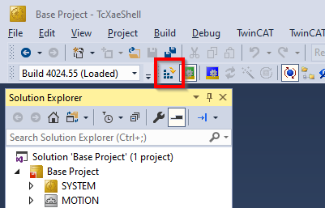
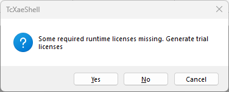
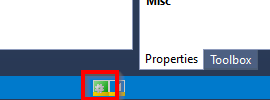
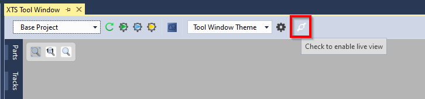
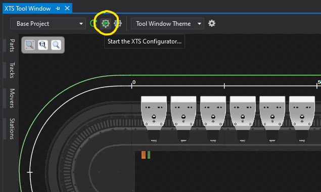
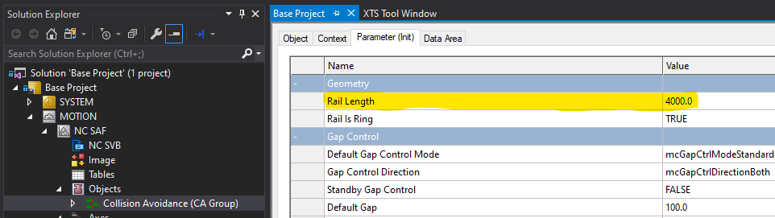
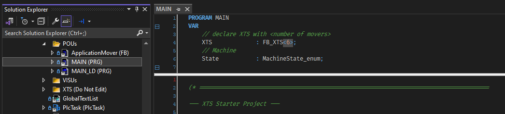
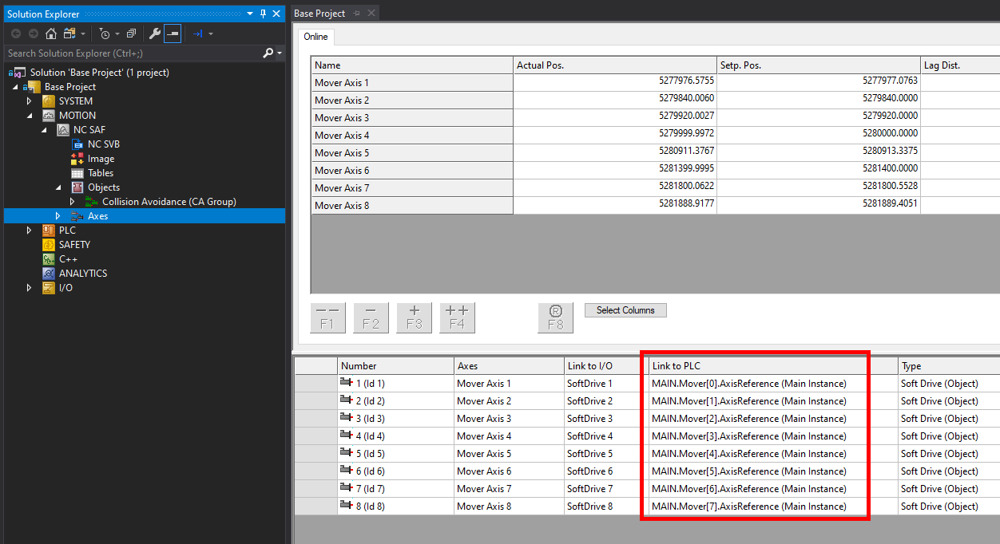
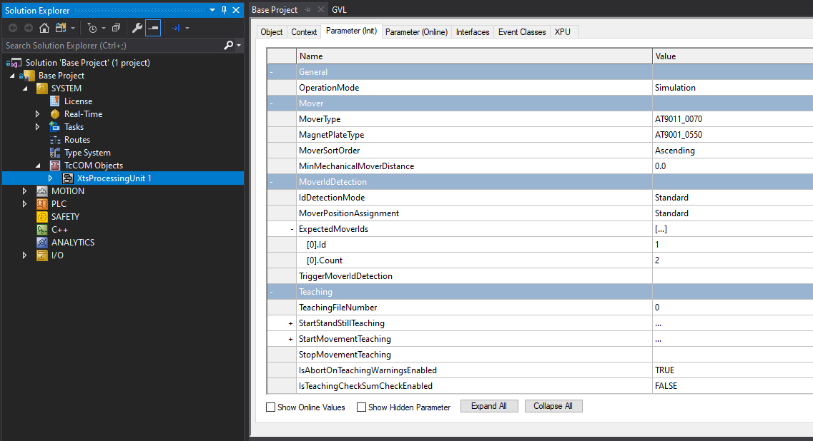

First Steps
Project Requirements
For new projects, the latest versions of TwinCAT and XTS software should be utilized.
All XTS projects will require:
Running the Code
This project ships with a ready-to-run oval with a 4m track length and 6 movers that run in simulation mode on your PC, no XTS hardware is required. It can be run as-is for testing and learning purposes.
Load and Activate
Open the project with TwinCAT. Then activate the configuration using the button on the toolbar.

Confirm that you want to activate the configuration and check the Autostart PLC Boot Project(s) option.

You may be prompted to activate a trial license by entering a Captcha. Enter this value to generate the trial license. The project has been designed to work within the limits of a trial license. This license will be valid for 7-days after which it can be renewed indefinitely using this same process.


Finally select OK to Restart TwinCAT System in Run Mode
 ;
;
Twincat should now be running and can be confirmed by the green icon in the lower right status bar.

Operate the System
To view the simulated system select TwinCAT > XTS > XTS Tool Window.

Then select the Live View button.

The movers will be idle at this point. To start the movers in motion open the PLC HMI screen at Base Project > PLC > Main > Main Project > VISUs > Controls.

The Controls HMI and XTS Tool Window are both dockable windows, arrange them as you desire to view both simultaneously. Here they have been placed side-by-side.

To start the system first click Enable to turn on the Mover's servo closed loop control then Start to begin the motion sequence.
The three speeds used in the prepared motion sequence can be edited using the text fields next to the control push buttons.
Project Customization
The base project includes a simulated configuration for a 4m oval track and 6 movers. This will need to be modified to fit your application.
Configuring XTS Hardware
In order to modify the program to fit a different track configuration, navigate to the XTS Tool Window.
Then launch the XTS Configurator and follow the prompts to configure your system.
The configurator occasionally conflicts with existing settings in the project. To avoid this, it can help to delete the following prior to running the XTS Configurator:
- XtsProcessingUnit
- All Mover Axis Objects
- Existing XTS_Task
- Any hardware in the IO section.

Initialization Settings
Once your hardware configuration is set, you will need to change a few variable parameters in the code to match the system.
Inside MOTION > Objects > Collision Avoidance (CA Group), set the Rail Length parameter to match your hardware.

Next, open the MAIN Pout file within PLC and modify the number of movers in the XTS declaration FB_XTS<6> by changing the value in the brackets.

Next, check that each of your Axis objects are properly linked to a corresponding Mover object.
!!! Note The project contains ErrorMover objects which also appear as options when linking axes. Do not link axes to these variables.

Lastly, open the XtsProcessingUnit within SYSTEM and verify that every setting here is correct
